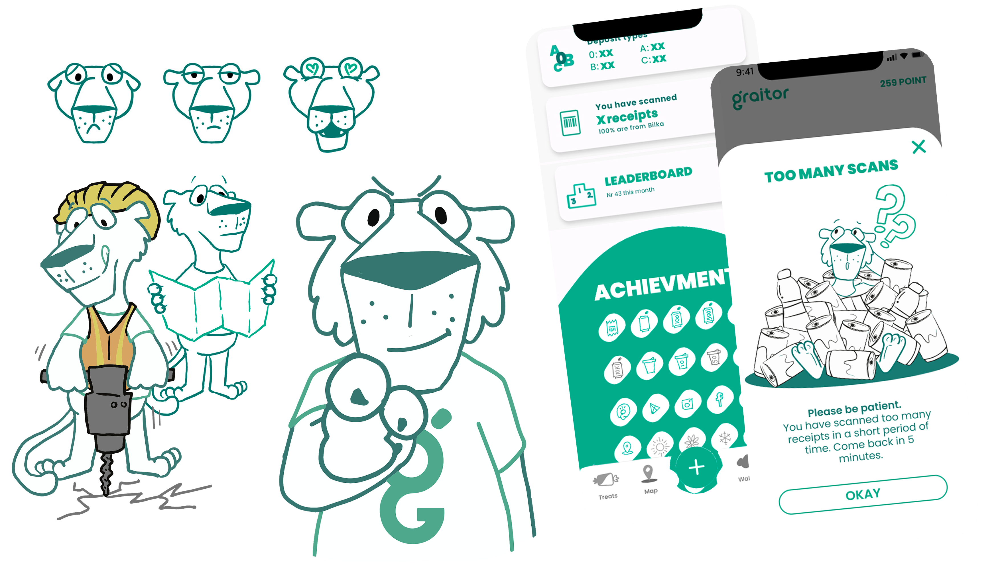

Graitor

During my internship at Graitor, I worked on developing the company’s visual identity across multiple platforms. My main responsibility was designing and evolving a new mascot that would represent the brand, along with creating consistent graphic assets for use in marketing, social media, and in-app communication.
A large part of the work involved designing and refining a mascot character that could function as a recognisable brand element across different contexts. I explored multiple visual directions and created variations used in onboarding flows, notifications, social media posts, and promotional material. The goal was to build a consistent emotional connection between users and the Graitor brand.
In addition to illustration work, I helped define and apply a visual design system, including color usage, typography, and layout rules, which were documented in a design guide. This ensured consistency across all outputs, especially when working with Instagram and Facebook templates, partner posts, and campaign materials.
I also contributed to practical design production for real-world use, including social media content, onboarding visuals, newsletter design, sticker concepts, and app-related marketing assets. These designs were adapted for different platforms and constraints, requiring careful attention to hierarchy, readability, and scalability.
Throughout the internship, I worked closely with marketing and product teams, which gave me insight into how design decisions are influenced by business goals, communication between departments, and real implementation constraints such as copyright, platform requirements, and technical limitations.
Overall, the internship strengthened my ability to work within a brand system, design across multiple formats, and maintain visual consistency while iterating on creative concepts in a professional environment.